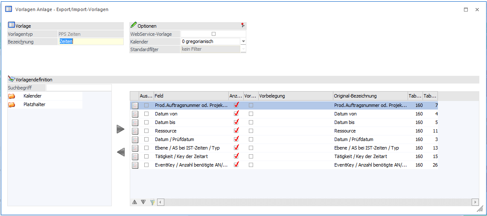
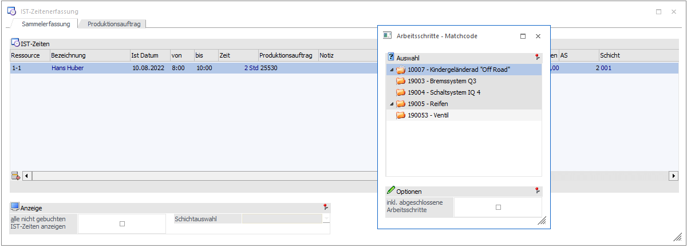
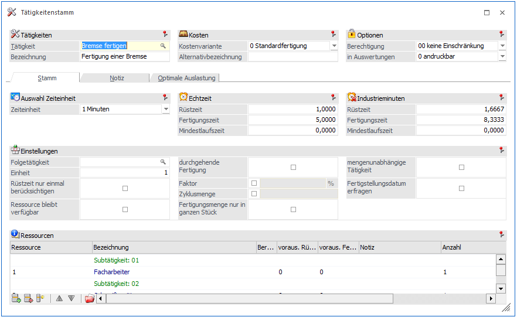

Grundsätzlich unterscheidet sich die Anlage von Vorlagen des Typs "PPS Zeiten" nicht von der Anlage anderer Typen. Aus diesem Grund werden in diesem Kapitel nur die Spezial- bzw. Sonderfunktionen beschrieben.
Tabelle "Datenfelder der Vorlage"

Die Definition der Felder erfolgt wie bei allen anderen Vorlagen auch. Beim Verwenden der Vorlage für den IST-Zeiten Import gibt es das folgende Feld, was eine Sonderfunktion hat:
Ø EventKey / Anzahl benötigte AN/MA
Das Feld sollte in der Vorlage enthalten sein, wenn beim Import der Zeiten im Anschluss aus der Quelldatei gelöscht werden sollen. Der enthaltene Wert wird nicht importiert. Das Feld kann einfach ein Zahlenwert enthalten.
Die folgenden Felder werden für den Import benötigt:
Ø Prod.Auftragsnummer od. Projektnummer
Dabei handelt es sich um die Produktionsauftragsnummer
Ø Datum von
Beginn der Tätigkeit. Es ist ein Datumsfeld mit Uhrzeit
Ø Datum bis
Ende der Tätigkeit. Es ist ein Datumsfeld mit Uhrzeit
Ø Ressource
Die Ressource (Einzelressource und keine Gruppe), welche die Tätigkeit vorgenommen hat.
Ø Datum / Prüfdatum
Das enthaltene Datum ist wie ein Erfassungsdatum zu betrachten, wann die IST-Zeit erfasst wurde
Ø Ebene / AS bei IST-Zeiten / Typ
Die Ebene / Arbeitsschritt des Produktionsauftrags.

Ø Tätigkeit / Key der Zeitart
Die durchzuführende Tätigkeit, dabei wird nicht die Bezeichnung hinterlegt, sondern der Wert, der in den Tätigkeiten-Stammdaten in dem Feld "Tätigkeit" steht. In dem Beispiel der Tätigkeit wäre es "Bremse fertigen".

Anmerkung
Nicht benötigte Felder wie Schemanummer oder Positionstext etc. werden beim Import nicht unterstützt, d.h. die enthaltenen Werte werden nicht mit importiert.